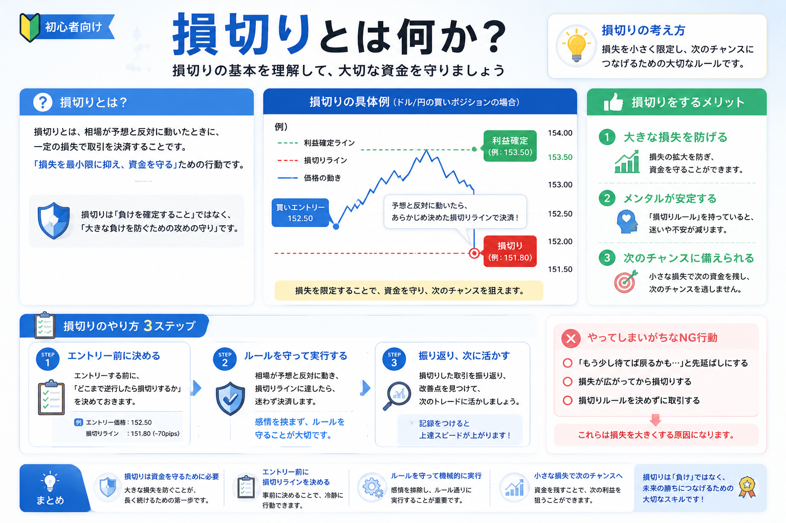

Overview
損切りとは？損失を小さいうちに確定する考え方

損切りとは、損失が出ている投資を売却して、損失を確定させることです。
たとえば、買った株や通貨が下がったときに、「これ以上損失が広がる前に一度売る」という判断が損切りにあたります。
初心者にとって、損失を確定するのは心理的にかなり難しいものです。
「もう少し待てば戻るかもしれない」「ここで売ると負けが決まってしまう」と考えやすいからです。
ただし、損切りは感情で急いで売ることではありません。
本来は、大きな損失を避けるために、あらかじめ決めたルールに沿って判断するリスク管理です。
Emotion
初心者が損切りできなくなりやすい理由
損切りが難しい理由の多くは、知識不足だけではなく、感情の影響にもあります。 特に初心者は、損失が出たときに次のような考え方になりやすいです。
心理 1
戻るかもしれない
含み損が出ると、「いつか元の価格に戻るはず」と考えたくなります。 しかし、戻る根拠がないまま持ち続けると、損失がさらに広がる場合があります。
心理 2
損を確定したくない
含み損の状態では、まだ損失が確定していないように感じます。 そのため、売却することに強い抵抗を感じることがあります。
心理 3
平均単価を下げたくなる
下がったところで追加購入するナンピンは、平均取得単価を下げる方法です。 ただし、計画がないまま繰り返すと、損失額や保有量が大きくなりやすい点に注意が必要です。
心理 4
耐えられない金額で取引している
値動きが気になって冷静でいられない場合、投資額やロットが大きすぎる可能性があります。 初心者ほど、まずは小さく始めることが大切です。
Purpose
損切りを考える主な目的
-
大きな損失を避けるため
小さな損失で済むうちに判断することで、資金全体へのダメージを抑えやすくなります。 投資では、すべての判断を当てることよりも、大きく負けすぎないことが大切です。
-
次の投資機会を残すため
含み損を抱えたまま資金が動かせない状態になると、別の投資機会を逃すことがあります。 損切りは、資金を次に回すための判断でもあります。
-
感情的なナンピンを防ぐため
「下がったから買い増す」を繰り返すと、気づかないうちに一つの銘柄や通貨に資金が偏る場合があります。 事前にルールを決めることで、感情的な追加投資を避けやすくなります。
-
レバレッジ取引のリスクを抑えるため
FXや信用取引のようにレバレッジを使う取引では、値動きに対する損益が大きくなります。 強制ロスカットを避けるためにも、早めの資金管理が重要になります。
Rule
損切りを考えるときの判断材料
損切りは、その場の気分で決めるものではありません。初心者は、次のような判断材料を使って整理すると考えやすくなります。
最初に決めたラインを割った
サポートライン、直近安値、移動平均線など、事前に見ていた目安を大きく割った場合は、買ったときの前提が崩れていないか確認します。 ラインは絶対ではありませんが、判断を整理する材料になります。
買った理由が崩れた
決算悪化、業績予想の下方修正、トレンド変化、想定していた材料の消滅などがある場合、保有を続ける理由を見直す必要があります。
資金管理ルールを超えた
たとえば「1回の取引で資金の一部までしか損しない」と決めている場合、そのラインを超える前に判断します。 取引ごとの損失額を小さくすることで、投資を続けやすくなります。
不安で冷静に見られなくなった
値動きが気になって生活に影響するほど不安な場合、投資額やレバレッジが大きすぎる可能性があります。 損切りだけでなく、次回以降の取引サイズも見直すポイントです。
Chart
チャートで見る損切りの目安

チャートを使って損切りを考える場合は、「どこを割ったら想定が崩れたと見るか」を事前に決めておくことが大切です。
たとえば、過去に何度も反発している価格帯を下回った場合、サポートラインを割ったと見る人もいます。
| 判断材料 | 見るポイント | 初心者向けの考え方 |
|---|---|---|
| サポートライン | 過去に下げ止まりやすかった価格帯 | ここを大きく割ると、流れが変わった可能性を考える |
| 直近安値 | 最近の値動きで安くなった水準 | 安値を更新すると、弱い流れが続いている可能性を考える |
| 移動平均線 | 価格の大きな流れを見る線 | 線の下で推移し続ける場合、流れの変化を確認する |
| トレンド | 高値と安値の切り上げ・切り下げ | 買ったときの上昇シナリオが崩れていないかを見る |
ただし、チャートの形だけで機械的に判断するのは注意が必要です。
株なら企業の業績や決算、FXなら経済指標や金利、相場全体の流れもあわせて確認しましょう。
Position Size
「耐えられない」時点で、投資額が大きすぎる場合もある
損切りを考える前に見直したいのが、投資額やロットの大きさです。
少し下がっただけで強い不安を感じる場合、その取引は自分の資金量やリスク許容度に対して大きすぎる可能性があります。
余剰資金で行う
生活費や近いうちに使うお金で投資をすると、少しの値下がりでも冷静に判断しにくくなります。
ロットを小さくする
FXや信用取引では、取引数量を大きくしすぎると損益の振れ幅も大きくなります。
レバレッジを抑える
レバレッジは利益だけでなく損失も大きくします。初心者は特に控えめに考えることが大切です。
損切りが苦しいと感じる原因は、売る判断そのものではなく、最初から大きく張りすぎていることにある場合もあります。 まずは小さく始め、損失が出ても冷静に見直せる範囲に抑えることが大切です。
Important
損切りが必ず正解とは限らない
損切りは大切なリスク管理の考え方ですが、いつでも必ず正解というわけではありません。
一時的に下がったあと、再び上昇することもあります。長期投資では、短期的な値動きを重視しすぎない考え方もあります。
短期売買
ルールを決めておく重要性が高い
短期売買では、値動きの判断回数が多くなります。 そのため、損失ラインや利確ラインを事前に決めておかないと、感情に振り回されやすくなります。
長期投資
買った理由が残っているかを見る
長期投資では、一時的な値下がりだけで判断しないこともあります。 ただし、企業の成長性や投資方針そのものが崩れた場合は、見直しが必要です。
大切なのは、「下がったら必ず売る」「絶対に売らない」のどちらかに決めつけないことです。
自分の投資目的、期間、資金量、リスク許容度に合わせて、事前に判断基準を持っておくことが重要です。
Beginner Point
初心者がまず意識したい損切りの考え方
- 買う前に「どこまで下がったら見直すか」を決める
- 損失額が生活に影響しない範囲で始める
- ナンピンする場合も、回数や金額を事前に決める
- レバレッジを使う場合は、損失の大きさを先に確認する
- 「戻ってほしい」ではなく「買った理由が残っているか」で考える
- 1回の失敗で資金全体を大きく減らさない
初心者の段階では、完璧な売買タイミングを目指すよりも、まずは大きく負けすぎないことを意識しましょう。
損切りは、投資をやめるためのものではなく、投資を続けるために資金を守る考え方です。
Related
損切りとあわせて読みたい関連記事
損切りを理解するには、チャートの見方、レバレッジ、リスク管理、長期投資の考え方もあわせて確認しておくと整理しやすくなります。
Next Step
証券口座やFX口座の比較を見ておきたい方へ
損切りや資金管理を考えるときは、取引画面の使いやすさ、注文方法、取扱商品、手数料なども重要です。 これから口座を選ぶ方は、比較ページもあわせて確認してみてください。
一般ユーザー目線の体験でおすすめの会社をご紹介

FAQ
よくある質問
損切りとは何ですか？
損切りとは、損失が出ている投資を売却して損失を確定することです。 大きな損失を避け、資金を守るためのリスク管理として使われます。
損切りは必ずした方がよいですか？
必ず損切りすればよい、というわけではありません。 長期投資、短期売買、投資目的、資金量によって考え方は変わります。 大切なのは、感情ではなく事前に決めたルールで判断することです。
損切りできない原因は何ですか？
「戻るかもしれない」「損を確定したくない」「平均単価を下げたい」といった心理が原因になることがあります。 また、最初から投資額やロットが大きすぎる場合も、冷静な判断が難しくなります。
ナンピンは悪い方法ですか？
ナンピン自体が必ず悪いわけではありません。 ただし、計画がないまま「下がったから買い増す」を繰り返すと、損失や保有量が大きくなりやすいです。 回数、金額、撤退ラインを決めておくことが大切です。
初心者はどのくらいの損失で損切りすればよいですか？
一律の正解はありません。 投資額、保有期間、商品、リスク許容度によって変わります。 まずは「この金額までなら冷静に見直せる」という範囲を決め、取引前にルール化しておくと判断しやすくなります。
ご利用にあたっての注意事項
本記事は情報提供を目的としており、投資の勧誘を目的としたものではありません。株式・投資信託・外国証券・FX・暗号資産等の取引は元本保証がなく、相場変動等により損失が生じる場合があります。取引開始前に、契約締結前交付書面や商品説明書、目論見書等を必ずご確認のうえ、ご自身の判断と責任でお取引ください。